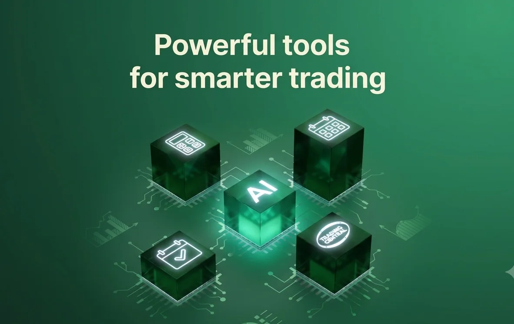
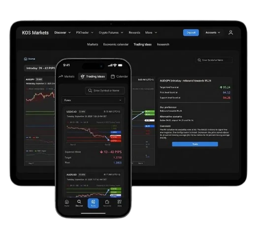
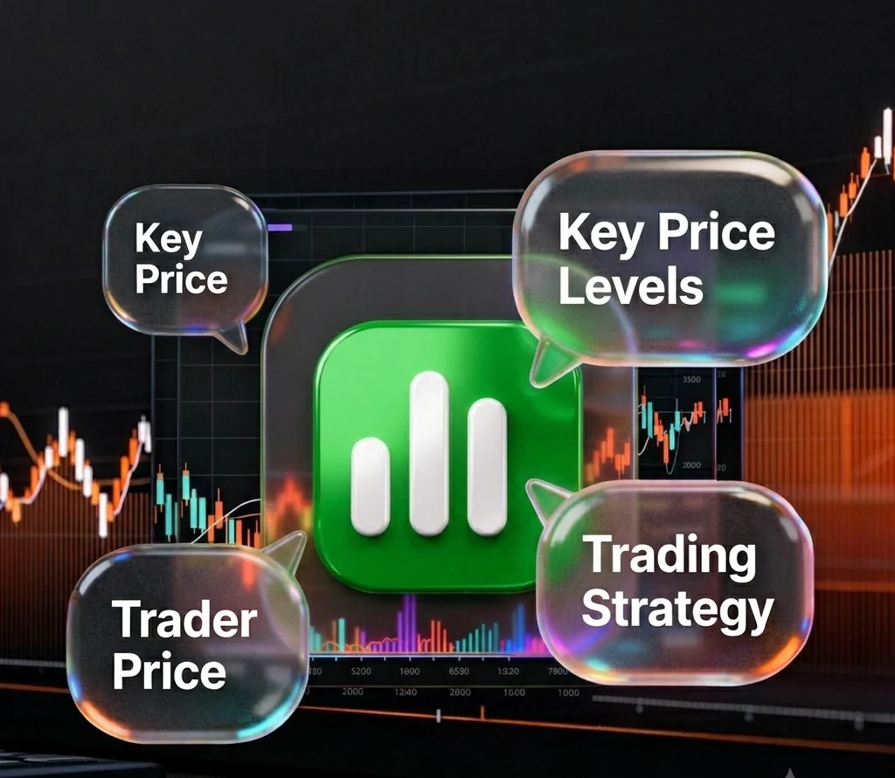
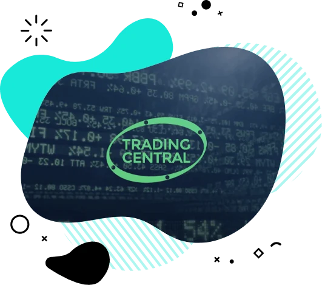
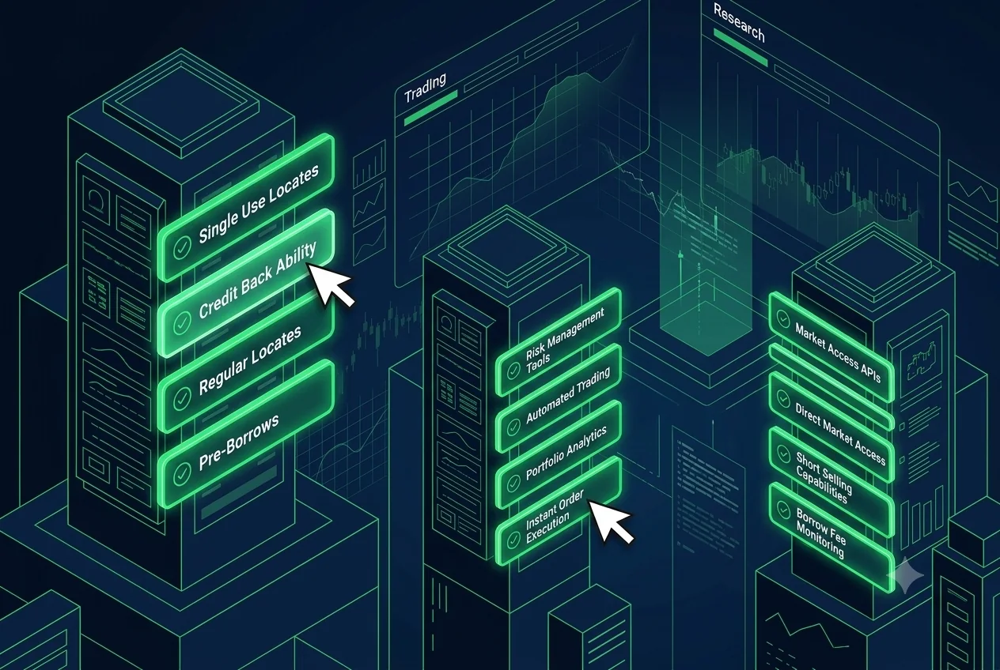
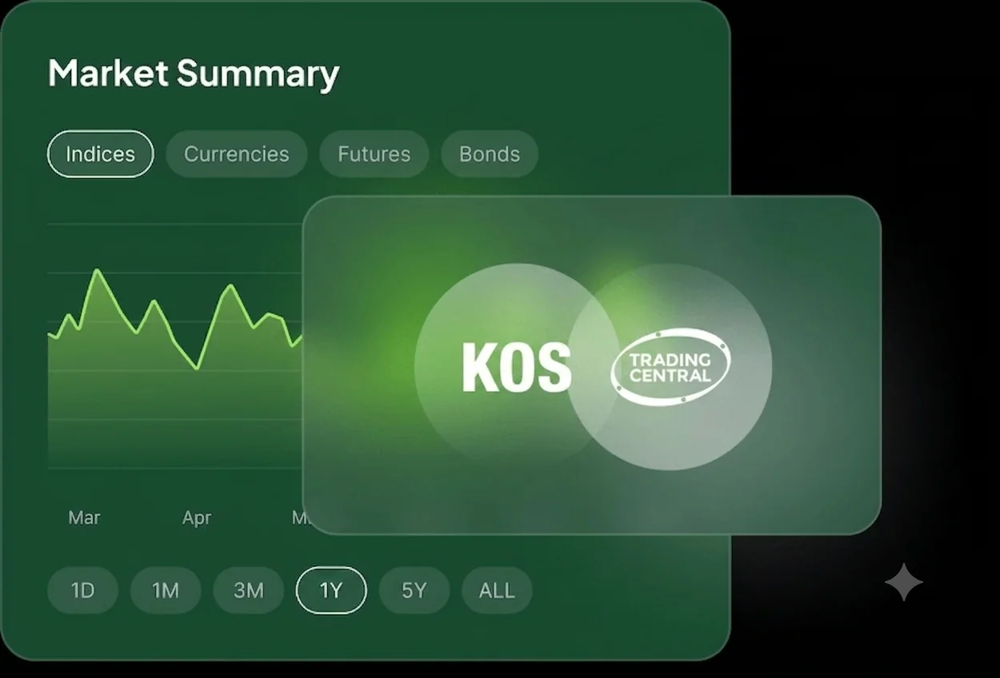

Technical insights
Review chart-based views, price levels and market scenarios before placing a trade.
Trading Tools
Access market insights, technical analysis, trading signals and sentiment tools designed to help you prepare for the next market opportunity.


Trading Central
Trading Central is a market research and analytics suite that combines technical analysis, market sentiment, trading ideas and event-driven insights in one place.
With KOS Markets, traders can use Trading Central tools to scan market movement, compare opportunities and support trading decisions with structured analysis.
Review chart-based views, price levels and market scenarios before placing a trade.
Follow trending instruments and news themes through sentiment-driven market tools.
Use signals and market updates to identify potential opportunities more efficiently.
How to access Trading Central
Log in through the secure client portal or WebTrader account area.
Navigate to the Trading Central tab to explore available tools.
Choose market news, signals, calendar events or analytics for your watchlist.
Use real-time insight to support informed, confident trading decisions.

Market Buzz
Trading Central helps organize market stories, technical levels and instrument sentiment so you can focus on the ideas that matter.

Track the instruments and topics gaining attention across global markets.

Review structured analysis and market commentary before building your trade plan.

Use signal-style tools to recognize possible price scenarios and key levels.

Never miss an opportunity
Stay updated with market-moving events and scheduled data releases.
Monitor trending assets and get inspired for your next trade.
Leverage analysis tools backed by established market research.
FAQ
Quick answers about using Trading Central tools with KOS Markets.
Trading Central is a market analytics platform that provides research tools, technical analysis, market sentiment, trading signals and event-based insights for traders.
Eligible KOS Markets clients can access Trading Central through the secure client portal or trading account area when the service is available on their account.
Market Buzz is a sentiment and news-discovery tool that helps traders follow trending instruments, themes and stories across global markets.
Trading Central can provide signal-style market views, technical levels and scenario analysis. These tools are informational and do not remove trading risk.
Yes. New traders can use Trading Central to understand market themes and prepare watchlists, while experienced traders can use it as part of a broader strategy workflow.
Ready to trade with better insight?
Open your KOS Markets account and use Trading Central tools to prepare, compare and act on market opportunities with more structure.